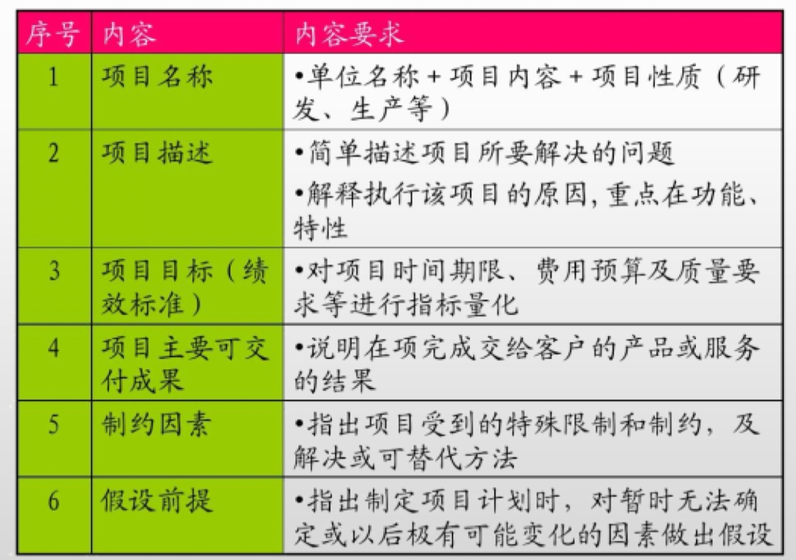
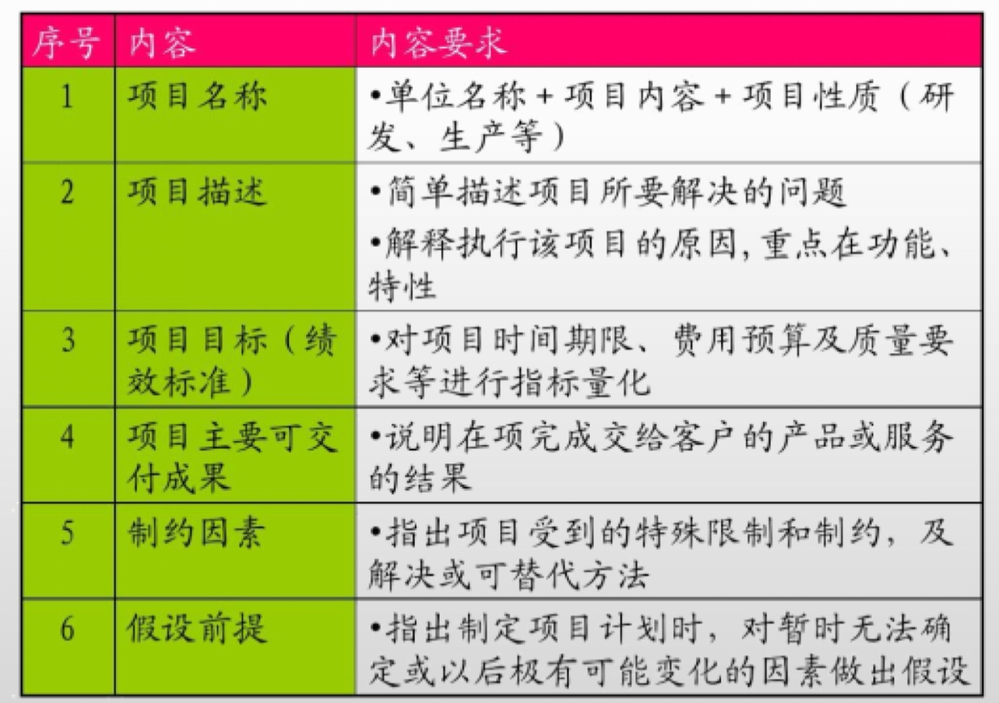

项目范围管理
7、项目范围管理
项目范围管理含义及作用
1 | 项目范围管理包括确保项目做且只做所需的全部工作，以成功完成项目的各个工程。 |
范围管理计划
1 | 范围管理计划可以是正式或非正式的，非常详细或高度概括的。 |
需求管理计划
1 | 需求管理计划主要内容： |
需求文件
1 | 需求文件描述各种单一需求将如何满足与项目相关的业务需求，其主要内容包括：业务需求、干系人需求、解决方案需求、项目需求、过渡需求、与需求相关的假设条件、依赖关系和制约因素。 |


需求跟踪矩阵
1 | 需求跟踪矩阵是把产品需求从其来源连接到能满足需求的可交付成果的一种表格。 |

范围说明书
1 | 速记词：产验可除制假 |
 

WBS内容
1 | 创建WBS是将项目可交付成果和项目工作分解成较小的、更易于管理的组件过程，主要作用是对所交付的内容提供一个结构化的视图 |
WBS的表现形式（工作分解结构）
1 | 表现形式有两种：树形结构和表格形式 |
工作包（1天-2周）
1 | 工作包位于WBS每条分支最底层的可交付成果或项目工作组成部分。工作包应该非常具体，以便承担者能够明确自己的任务、努力的目标和承担的责任。工作包大小需要遵循8/80原则。每个控制账户可能包括一个或多个工作包，但是一个工作包只属于一个控制账户。 |
分解
1 | 分解是一种把项目范围和项目可交付成果逐步划分为更小、更易于管理的单元，直到可交付物细分到足以用来支持未来的项目活动定义的工作包。 |
范围基准
1 | 范围基准包括：批准的范围说明书、WBS和WBS词典。 |
范围确认
1 | 确认范围是正式验收已完成的项目可交付成果的过程，主要作用是使验收过程具有客观性，同时通过验收每个可交付成果，提高最终产品、服务或成果获得验收的可能性。 |
本博客所有文章除特别声明外，均采用 CC BY-NC-SA 4.0 许可协议。转载请注明来自 East'blog！